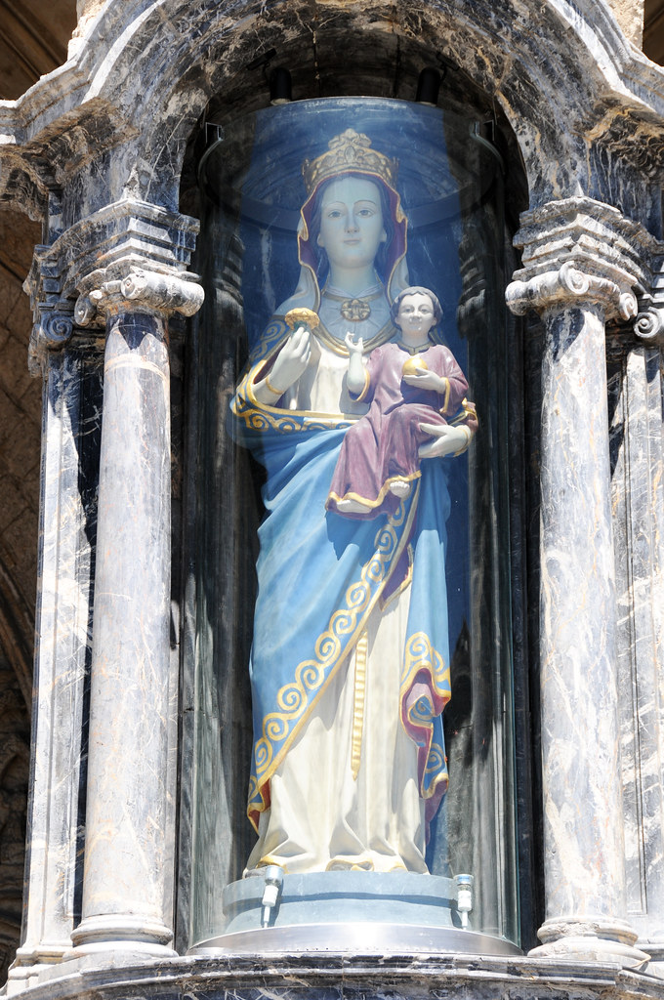

Origen de las Fiestas de la Blanca
La celebración de festejos en honor a la Virgen Blanca se remonta a tiempos muy lejanos, mucho antes de ser declarada patrona de la ciudad. Hasta 1883 se llevaban a cabo unos actos que, bajo la denominación de «Fiestas de Vitoria», se desarrollaban durante la primera semana de septiembre. A partir de 1884 pasaron a celebrarse en agosto, tras un acuerdo municipal en el que se decidió que las fiestas fueran, ya de forma oficial, en honor de la Virgen Blanca, cuya festividad aparecía en el calendario litúrgico el 5 de agosto. En 1953, la corporación municipal establece el calendario festivo tal y como se conoce hoy en día.
